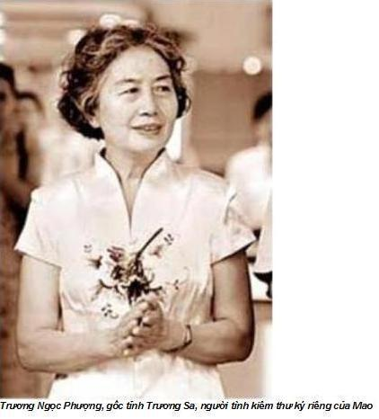
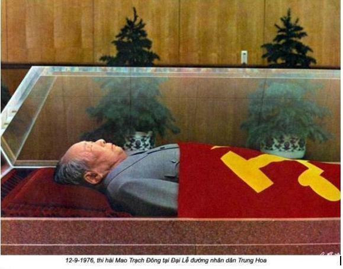
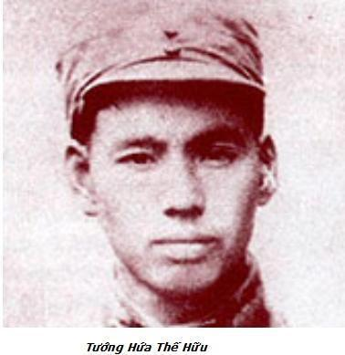

Chương 1 (Tt)

Mao Viên Tân lục lọi khắp phòng với ánh mắt soi mói như muốn tìm kiếm cái gì đấy. Mao Viên Tân, con trai của Mao Trạch Minh, em trai của Chủ tịch. Trong chiến tranh thế giới thứ II, Mao Trạch Minh bị tỉnh trưởng Tân Cương, tây bắc Trung Quốc kết án tử hình. Chính tỉnh trưởng Thân Tử Hải từng là người cùng chí hướng với Mao Trạch Minh, nhưng sau khi phát xít Đức tấn công Liên Xô đã chạy sang hàng ngũ Tưởng Giới Thạch, Quốc dân đảng. Sau đó vợ của Mao Trạch Minh bị bắt, bản thân Mao Viên Tân sinh ra trong tù. Ra tù, mẹ Mao Viên Tân đi lấy chồng, Mao phải nuôi đứa cháu. Sau năm 1949, Mao đưa vào Trung Nam Hải, nhưng hiếm khi nhòm ngó đến cháu.
Tôi được chứng kiến tận mắt Mao Viên Tân lớn lên như thế nào. Trong những năm còn bé, quan hệ của anh ta với Giang Thanh không suôn sẻ. Tuy nhiên năm 1966, khi bắt đầu Cách mạng văn hoá, anh ta vào lứa tuổi trên 20, rồi tham gia nhóm nổi loạn. Mao Viên Tân viết lá thư xin lỗi Chủ tịch về những gì sai trái đối xử không đúng mức khi còn trẻ, giờ đây xin ra nhập đội ngũ của Giang Thanh. Bây giờ đã ngoài 30, Mao Viên Tân được bổ nhiệm Chính uỷ tư lệnh vùng Triết Giang. Cuối năm 1975, khi Mao ốm nặng, Mao Viên Tân trở thành người liên lạc giữa Chủ tịch với những nhà lãnh đạo cao cấp. Từ đây Mao Viên Tân có chút quyền lực. Giang tin tưởng người cháu.
Đám bác sĩ và y tá cúi đầu sợ hãi, liếc nhìn nét mặt giận dữ của Giang Thanh. Uông Đông Hưng nói một cái gì đó với Trương Diêu Tự, người phụ trách nhóm cận vệ của Mao. Hận thù giữa Uông Đông Hưng và Giang Thanh có từ lâu. Uông Đông Hưng hoàn toàn không sợ, lờ đi sự nổi khùng của Giang Thanh. Uông chiếm được quyền lực lớn, giành nhiều chức vụ quan trong. Không những Trưởng ban tổ chức Ban chấp hành Trung ương đảng, còn lãnh đạo cơ quan mật vụ, bí thư đảng uỷ của Sư đoàn bảo vệ Mao, đảm bảo an ninh cho các lãnh tụ đảng cộng sản trong dinh thự Trung Nam Hải nhiều năm. Trước Cách mạng văn hoá, Uông Đông Hưng giữ chức thứ trưởng Bộ công an.
Trương Diêu Tự, cũng như Uông Đông Hưng, cựu trào trong đảng, từng tham gia cuộc Vạn Lý Trường Chinh, cả hai đều người Giang Tây. Giờ đây hai cán bộ an ninh đang soạn thảo kế hoạch đặt thi hài Mao trong Đại sảnh đường Nhân dân, với hàng chục ngàn nhân dân đến viếng, việc an ninh phải được thắt chặt an toàn mức tối đa.
Bỗng nhiên Giang Thanh đổi giận làm lành. Có lẽ bà ngộ nhận con đường tới quyền lực chỉ còn gang tấc, không thể vuột khỏi, nhanh chóng trở thành người thống trị Trung Hoa.
- Thôi được – bà nói – các đồng chí đã làm tất cả những điều có thể và các đồng chí chẳng sung sướng gì. Xin cám ơn tất cả mọi người.
Quay người sang cô phục vụ, bà đề nghị chuẩn bị cho bà bộ áo tang bằng lụa đen. Giang Thanh chuẩn bị để tang chồng.
Hoa Quốc Phong đề nghị Uông Đông Hưng gấp rút triệu tập phiên họp bộ chính trị. Mối quan hệ giữa Hoa và Uông mới gần đây.
Phần đông những người có mặt sắp ra về, bỗng nhiên Trương Ngọc Phượng vừa khóc vừa nói:
- Chủ tịch bỏ chúng ta rồi! Tôi sẽ làm với ai đây?
Giang Thanh tiến đến ôm cô, mỉm cười, khuyên nhủ đừng khóc.
- Bây giờ cô sẽ làm việc với tôi – bà nói.

Nước mắt của Trương Ngọc Phượng tức thời biến mất. Cô ta không giữ nổi nụ cười và trả lời:
- Tôi rất cám ơn đồng chí, đồng chí Giang Thanh ạ.
Tôi nghe thấy Giang Thanh thì thầm với Trương Ngọc Phượng:
- Từ bây giờ đừng cho ai vào buồng Chủ tịch hay phòng khách, thu nhặt, sắp xếp tất cả các giấy tờ trong phòng đưa lại cho tôi.
Sau đấy Giang Thanh mới đi vào phòng lớn chờ cuộc họp Bộ chính trị, cách buồn Mao hai phòng. Trương Ngọc Phượng đi theo sau, hứa thực hiện lệnh được giao.
Lúc sau Trương Diêu Tự, đội trưởng đội cận vệ tìm tôi. Ông vừa mới từ phòng ngủ của lãnh tụ ra, đang băn khoăn điều gì đó. Trương hỏi có ai trong số người thày thuốc nhìn thấy đồng hồ của Mao không.
- Đồng hồ nào chứ? Tôi hỏi.
- Cái đồng hồ mà đồng chí Quách Mạc Nhược tặng Mao chủ tịch trong thời kỳ hội đàm ở Trùng Khánh 8-1945.
Mao không có thói quen đeo đồng hồ, chiếc đồng hồ Omega Thuỵ sĩ, món quà tặng của Quách Mạc Nhược có giá trị lịch sử lớn.
Quách Mạc Nhược nhà văn lớn nổi tiếng, nhà khoa học xuất sắc đa tài, bạn và người ủng hộ Mao. Một thời gian dài ông làm Chủ tịch Viện hàn lâm khoa học Cộng hoà nhân dân Trung Hoa, tạ thế năm 1978. Trong cuộc hội đàm lịch sử ở Trùng Khánh qua trung gian Mỹ đã thoả thuận đạt được hoà giải giữa đảng Cộng sản Trung Quốc và Quốc dân đảng, hình thành một chính phủ liên minh chống Nhật. Do đó ở Trung Quốc đã ngăn chặn được một cuộc nôị chiến, tập hợp được lực lượng chống Nhật.
- Tất cả chúng tôi đều bận cấp cứu lãnh tụ – Tôi trả lời – Không ai chú ý tới đồng hồ. Sao ông không hỏi Trương Ngọc Phượng?
- Tôi thấy Mao Viên Tân cứ loanh quanh chỗ đó. Có thể ông ta lấy chiếc đồng hồ?
- Không ai trong số nhân viên y tế có thể lấy. Tôi trả lời.
Trương Diêu Tự đi tới giường Mao. Lát sau từ trong phòng lớn nơi bắt đầu cuộc họp Bộ chính trị, Uông Đông Hưng đi ra, mời tôi sang buồng nhỏ bên cạnh để nói chuyện. Qua đấy, tôi biết Bộ chính trị vừa mới quyết định thi hài của lãnh tụ phải được bảo quản khỏi phân huỷ trong hai tuần để nhân dân viếng tang ông. Bắc Kinh vào tháng chín trời còn rất nóng, giới lãnh đạo đảng mong muốn công việc bảo quản thi hài phải làm khẩn cấp.
Khi Mao còn sống, không ai trong chúng tôi cả gan nghĩ tới vấn đề tang lễ khi ông còn sống, nhưng bây giờ người ta yêu cầu bản quản thi hài ông vài tuần, chúng tôi không ngạc nhiên, cũng chẳng khó khăn gì.
Tôi đi ra thực hiện mệnh lệnh của lãnh đạo, chuẩn bị thi hài trong lễ viếng, một đại uý trong ban bảo vệ của Trương Diêu Tự chặn tôi lại, nói lấp lửng:
- Bác sĩ Lý, đừng làm rối công việc chuẩn bị. Bộ chính trị đang họp, tôi linh cảm thấy rằng chẳng có cái gì tốt đẹp hứa hẹn với ông đâu. Chỉ cần ông phạm sơ xuất nhỏ, cũng phải trả giá đấy.
Trong khoảnh khắc đầu tiên sau cái chết của Mao tôi cảm thấy ớn lạnh trong lồng ngực, nhưng nó nhanh chóng bị nén lại, tôi ghi nhận những lời doạ của viên sĩ quan với sự bình thản tự tin.
Tôi hoàn toàn nhận ra, người ta có thể buộc tội giết lãnh tụ. Nhà tôi năm đời làm thày thuốc. Các cụ đã kể cho tôi, thời nhà Thanh, trong những năm cai trị của Từ Hy Thái Hậu (1835-1908), cụ tôi là người rất được kính trọng. Thậm chí người ta đã vời cụ từ quê An Hội ra cung vua để làm ngự y. Một cụ tổ khác cũng chữa cho Hoàng đế Đồng Trị và sau đó cũng trở thành ngự y trong hoàng cung.
Người ta kể, Hoàng đế Đồng Trị thích vi hành. Nhà Vua cải trang, trốn khỏi hoàng cung, thường vào nhà thổ trong các ngõ hẻm phía nam Cấm Thành. Gia đình tôi kể, cụ tôi phát hiện ra hoàng đế Đồng Trị mắc bệnh giang mai. Từ Hy Thái Hậu đã giận dữ xử tội hoàng đế, rút trâm ngọc cài tóc ném xuống đất, thể hiện sự bực mình tột độ, không cho ông tôi chữa bệnh, nhốt Đồng Trị trong hậu cung. Chẳng bao lâu Đồng Trị chết, cụ tôi bị tước phẩm hàm quý tộc, mặc dù vẫn làm trong Ngự y viện. Lời buộc tội vẫn còn gắn với cụ đến lúc chết, nhưng người ta bỏ chiếc mũ ngự y vào quan tài cụ. Nghề của gia đình tôi vẫn tiếp tục tồn tại, truyền đời này sang đời khác, tuy nhiên do trường hợp của cụ tôi, không ai trong số dòng họ có thể hành nghề trong hoàng cung.
Tuy vậy không ai dám khước từ lời yêu cầu của các quan đại thần, tôi cũng không mong ước trở thành bác sĩ riêng cho Mao, nhưng đấy cũng là niềm vinh dự không thể từ chối. Đôi lần tôi định từ bỏ nhưng lần nào cũng bị Mao gọi trở lại.
Chỗ tôi làm việc rất bí mật, chỉ có gia đình, bạn rất thân biết. Công tác an ninh của lãnh tụ kiểm soát rất cao vì sợ những âm mưu tạo phản, huống chi tôi chỉ là bác sĩ riêng của Chủ tịch. Tất cả những ai biết công việc tôi đều cảnh cáo, tôi có thể chết bất ngờ. Một trong số các chị họ tôi đã nhắc tôi từ năm 1963 rằng: “Sức khoẻ của Mao chủ tịch nằm dưới sự theo dõi của toàn đảng và toàn dân. Nếu ai đó trong số uỷ viên Ban chấp hành trung ương tỏ ra không hài lòng về công việc của chú, họ không tha đâu”.
Một vài người bạn ngừng thăm tôi. Thậm chí sau khi gia đình tôi rời khỏi Trung Nam Hải, khách cũng hiếm khi đến chơi. Một người bạn của tôi ở Côn Minh, tỉnh Vân Nam, người bạn thân của Đàm Phú Dân, thời gian ấy là chính uỷ khu vực Côn Minh. Đàm bị người bảo vệ của chính ông ta xử tử trong Cách mạng văn hoá. Sau đó ai từng có mặt ở nhà Đàm, đều lôi đi thẩm vấn, rồi tống vào ngục. Về trường hợp này, cháu tôi cũng đã kể với tôi: “May mắn cháu chưa khi nào đến ngôi nhà ông ta”. Ít lâu sau cô cháu cũng ngừng đến thăm tôi.
Tôi không bao giờ có thể quên lời buộc tội các bác sĩ chữa cho Stalin, tội mưu sát lãnh tụ Xô viết. Vì vậy có thể đoán được hành động tương tự trong quan hệ của tôi và y tá điều trị cho Mao. Từ khi Mao gần chết tôi cũng đã âm thầm chuẩn bị ngày bị bắt. Ngay đầu tháng 9, sau cơn nhồi máu cơ tim lần thứ ba của Mao, tôi nhanh chóng chạy về nhà. Đây là lần đầu tiên sau nhiều tháng không về, tôi chuẩn bị quần áo bông và bành-tô, đồ vật lặt vặt đóng gói lại. Tôi nghĩ sẽ bị tống giam một nơi nào đó rất lạnh nên cần quần áo ấm. Tôi đi quanh phòng với ý nghĩ từ giã, không còn hy vọng quay trở lại. Vợ tôi đang đi làm, con tôi ở trường. Sau này vợ tôi kể, biết tôi về nhà do người giúp việc nói lại. Bà ta thấy tôi rất vội, vẻ bồn chồn lo lắng, hình như có một cái gì đáng sợ đang xảy ra.
Vì vậy khi nghe lời doạ nạt của tay bảo vệ ngay sau khi Mao qua đời tôi hoàn toàn bình tĩnh, vì đã chuẩn bị từ lâu. Mao hay nói “con lợn đã bị chọc tiết không sợ nước sôi”. Tôi giờ đây cũng như con lợn đã chết.
Trời vẫn tối, tôi gọi về nhà bộ trưởng y tế Lưu Thân Bình đề nghị gặp khẩn cấp. Tôi không nêu nguyên nhân, chỉ lưu ý, cuộc gặp gỡ không có mặt người khác. Lưu Thân Bình, vợ goá của cựu bộ trưởng công an Tạ Phú Trị. Cả hai đều thân cận Giang Thanh. Tôi ngờ Giang Thanh tác động để bổ nhiệm Lưu Thân Bình vào chức vụ bộ trưởng trong thời kỷ Cách mạng văn hoá, vì Lưu mù tịt về y tế.
Lưu Thân Bình vẫn ở trong khu Bộ công an, ngay Đại lộ Trường An, phía bắc khu phố cổ, kiến trúc theo phong cách cổ điển châu Âu, trước kia là toà nhà đại sứ quán nước ngoài. Bà chờ tôi ở phòng khách, còn ngái ngủ.
- Mao chủ tịch đã từ trần lúc mười hai giờ mười phút sáng – tôi nói.
Bà oà lên khóc không đợi tôi nói hết câu.
- Chúng ta có rất nhiều việc phải làm, đừng lãng phí thời gian.
Tôi nói tiếp:
- Lãnh đạo yêu cầu chúng ta bảo quản thi hài Chủ tịch trong vòng hai tuần lễ. Phải khẩn trương. Họ đang chờ chúng ta.
Bà lau nước mắt:
- Chúng ta cần phải làm gì?
- Chúng ta cần phải tham khảo ý kiến của các nhà khoa học Viện hàn lâm y học. Phải tìm ở các chuyên gia khoa giải phẫu bệnh và tế bào học để bàn bạc, xin ý kiến.
- Được rồi, trước tiên phải gọi Hoàng Thụ Trạch và Dương Trung tới đã.
Hoàng Thụ Trạch, thứ trưởng Bộ y tế, Lưu Thân Bình thường xuyên trao đổi với ông vì ông có bằng bác sĩ, mỗi khi cần tham khảo ý kiến, bà thường mời ông. Dương Trung là bí thư đảng uỷ Viện hàn lâm y học.
- Chúng ta không nên phí hoài thời giờ nếu gọi họ đến đây. Trước tiên chúng ta gọi các chuyên viên đến, hẹn tất cả sẽ gặp nhau ở phòng Dương Trung ở Viện Hàn lâm.
Lưu đồng ý và gọi các chuyên viên, còn tôi lái xe đến Viện Hàn lâm.
Khi tôi đến, thấy Dương Trung và Hoàng Thụ Trạch ở đó. Cũng có cả các chuyên viên – Trương Bình Thân, giáo sư khoa giải phẫu và Ngô Thanh, đồng nghiệp, trạc 40 tuổi – giáo sư khoa tế bào. Lưu Thân Bình vẫn chưa thông báo cho họ về lý do cuộc gọi ban đêm, Trương Bình Thân lo lắng, căng mắt nhìn qua cửa sổ.
Sau này tôi hiểu, các cuộc gọi như thế này thường xảy ra từ lâu. Trong những năm Cách mạng văn hoá, Trương Bình Thân thường bị kéo ra khỏi giường ấm để làm giấy chứng tử về cái chết của người bị tử hình hoặc tự tử. Bởi vì Hồng vệ binh thường dính dáng trong những cái chết đó, người ta không muốn đưa vụ việc công khai, nhưng giấy chứng tử cái chết có thể được dùng làm văn bản kết tội cho nên phải cần tới chuyên viên.
Trương Bình Thân không dám nhạo báng đám tiểu tướng Hồng vệ binh. Ông đã từng bị “tấn công”, bị đánh đập, nhưng sợ nhất bị gán cái nhãn “phản cách mạng”, tội này sẽ bị đánh chết. Nhiều lần ông tâm sự với tôi: “Mình không sợ bị tra tấn, cái mình sợ nhất là bị gán mác Phản cách mạng”. Hễ ai bị dán nhãn ấy, cầm chắc bản án tử hình. Mới đây người ta gọi ông vào ban đêm để khám thi thể ông cựu bộ trưởng bộ công an Lý Chấn “tự tử” bằng thuốc ngủ. Do bản kết luận ông ký, nên phải “ở lại” trụ sở bộ công an hơn hai tháng. Vì thế, khi tôi thông báo với mọi người, lãnh tụ từ trần, nét mặt Trương hết lo lắng.
Các chuyên viên nói, việc bảo quản thi hài Mao trong vòng hai tuần không phức tạp. Để làm điều đó chỉ cần tiêm hai lít dung dịch formaldehyde vào động mạch chân. Hoàng Thụ Trạch và Dương Trung chấp nhận phương pháp này. Trương Bình Thân và Ngô Thanh chuẩn bị bơm tiêm, thuốc rồi đi cùng tôi vào Trung Nam Hải. Phố xá vắng tanh. Lúc đó, 4 giờ sáng, trời vẫn tối. Nhân dân Trung Quốc vẫn còn chưa biết lãnh tụ vĩ đại không còn trên đời từ mấy tiếng rồi.
Bộ Chính trị vẫn còn họp. Sĩ quan trưởng bảo vệ nhìn thấy tôi nói: “Uông Đông Hưng và nguyên soái Diệp Kiếm Anh mấy lần tìm đống chí”. Ông nói thêm, “Bộ Chính trị đã thông qua bản thông báo cho toàn đảng, toàn quân và nhân dân Trung Quốc về sự từ trần của chủ tịch, bản tin sẽ được truyền tải qua đài phát thanh vào lúc 4 giờ chiều nay”.
Tôi nóng lòng chờ thông báo chính thức, bởi vì tôi hiểu rằng sẽ rõ mọi chuyện, liệu người ta có buộc tội tôi, đội cấp cứu do tôi phụ trách về cái chết của Mao hay không.
- Thông báo nói về bệnh và cái chết của Mao thế nào? – tôi lo lắng hỏi.
Ông ta đưa tôi một bản sao.
- Đồng chí tự đọc lấy.
Tôi cầm vội tờ giấy, vài dòng đầu tiên lập tức đập vào mắt tôi. Trong đó viết:
“… Các bác sĩ đã làm mọi thứ có thể, nhưng do tình trạng sức khoẻ của Chủ tịch không còn hy vọng. Mao Chủ tịch qua đời lúc 0 giờ 10 phút ngày 9 tháng 9 năm 1976 tại Bắc Kinh”.
Đọc tiếp không có ý nghĩa nữa. Tôi đã nằm ngoài vòng nghi ngờ rồi. Sau đó vài ngày, 13-9-1976, tên tôi xuất hiện trên tờ “Nhân dân Nhật báo”, đăng tải chức danh, lãnh đạo đội cấp cứu điều trị Mao. Thế là nguy hiểm đã qua.

Ngay khi tôi xuất hiện ở phòng họp mười bảy Uỷ viên Bộ chính trị, Uông Đông Hưng gặp tôi, nói rằng cần thảo luận gấp riêng. Chúng tôi đi vào phòng nhỏ, Uông Đông Hưng hỏi tôi đã đọc thông báo chưa.
Tôi trả lời, vừa đọc được mấy đoạn đầu tiên. Uông cười nhạt:
- Bộ chính trị vừa mới chấp thuận quyết định bảo quản thi hài lãnh tụ lâu dài. Đồng chí hãy nghĩ đi, làm điều này thế nào cho tốt nhất.
Tôi há hốc mồm kinh ngạc.
- Nhưng các ông vừa mới nói, chỉ bảo quản hai tuần thôi. Vì sao lại quyết định bảo quản thi hài lâu dài? Năm 1956 chính Mao chủ tịch bằng văn bản đã bày tỏ mong muốn được hoả táng. Tôi nhớ rõ thế.
- Đây là ý nguyện của Bộ chính trị. Chúng tôi vừa thông qua xong.
Tôi vẫn giữ ý kiến:
- Chuyện này rất khó thực hiện. Đồng chí nghĩ thế nào về chuyện này?
Uông Đông Hưng nói thêm:
- Thủ tướng Hoa Quốc Phong và tôi đã ủng hộ quyết định này.
- Nhưng cũng cần phải hiểu, điều này vượt quá sức chúng ta – Tôi nói – thậm chí sắt và thép còn bị thời gian huỷ hoại, nói gì đến xác người chết. Làm thế nào để ngăn cản thối rữa bây giờ được.
Lúc ấy, tôi nhớ chuyến đi với Mao năm 1957 tới Moskova, viếng lăng Lenin và Stalin. Thi hài đã héo quắt. Người ta kể cho tôi, mũi và tai của Lenin đã hoàn toàn hỏng, được thay bằng sáp. Bộ râu nổi tiếng Stalin cũng hoàn toàn bị hỏng, mặc dù kỹ thuật ướp xác của Liên Xô hoàn thiện hơn Trung Quốc rất nhiều. Tôi không thể hình dung chúng tôi sẽ bảo quản xác Mao như thế nào.
- Đồng chí cần phải hiểu tình cảm của chúng ta – Uông trả lời và nháy mắt.
- Tôi hiểu tất cả, nhưng khoa học Trung Quốc chưa đủ khả năng tiếp cận công việc này – Tôi trả lời.
- Chỉ cần ông tìm cho được những người có khả năng giúp anh làm việc này. Lãnh đạo đảm bảo tất cả các điều kiện cần thiết. Đồng chí cần thiết bị, hoá chất… bất cứ điều gì báo cho tôi biết – Uông kiên trì giải thích.
Lão Nguyên soái Diệp Kiếm Anh, người cao tuổi nhất trong số đảng viên cộng sản, người sáng lập Giải phóng quân Trung Quốc gặp tôi. Tôi rất quý trọng nguyên soái. Ông quan tâm đến quan điểm của tôi về quyết định vừa được thông qua, tôi phải nói đi nói lại cho ông biết tất cả các khó khăn. Lặng đi một lát ông nói:
- Không còn sự lựa chọn nào nữa, chúng ta cần thực hiện quyết định của Bộ chính trị. Nhưng bác sĩ Lý nên tiếp tục tham khảo những người tin cậy và có thể đề nghị Viện mỹ thuật và tạo hình. Có thể người ta ở đó làm được hình Mao chủ tịch bằng sáp. Nếu nó giống y thật, khi cần thiết thì trong tương lai chúng ta sẽ dùng nó để thay thế thi hài lãnh tụ.
Thế mới biết, đến cả Diệp Kiếm Anh, phó Chủ tịch Uỷ ban Khoa học kỹ thuật và Công nghiệp quốc phòng, trụ cột của Bộ chính trị cũng đòi làm những điều không thể làm được.
Uông Đông Hưng cũng đồng ý với Diệp Kiếm Anh, yêu cầu tôi không kể cho ai.
Đến tận giờ, tôi không biết có bao nhiêu Uỷ viên Bộ chính trị biết về phương án phiên bản Mao bằng sáp. Có thể điều này bí mật đến mức thậm chí Giang Thanh cũng không biết.
Tôi trở vào phòng đặt thi hài. Trong phòng chất đầy thiết bị y học, chúng tôi chuyển thi hài sang buồng thoáng hơn nối liền với phòng Bộ chính trị vừa họp. Nhiệt độ không khí khoảng 78 độ F (26 độ C), tương đối cao đối với thi hài. Tôi đề nghị hạ nhiệt độ xuống 50 độ F (10 độ C), tuy nhiên nhân viên phục vụ từ chối:
- Tôi không thể. Tất cả các lãnh tụ cao cấp đều có mặt, đây là chỉ thị của đồng chí Giang Thanh giữ nguyên nhiệt độ cao như thế. Đồng chí phải đề nghị trực tiếp với lãnh đạo.
Hệ thống điện ở Trung Nam Hải lấy từ hai trạm điện lực ở Bắc Kinh đảm bảo cung cấp để nhiệt độ bình thường trong phòng không phụ thuộc vào thời tiết bên ngoài, dù nơi khác bị cắt điện. Nhưng trong toà nhà 202 xây riêng cho Mao, lại không có khả năng điều hoà nhiệt độ cho từng phòng riêng biệt. Tôi vào phòng họp đề đạt quyết định Bộ chính trị, yêu cầu giảm nhiệt độ trong toà nhà. Sau đó các cuộc họp Bộ chính trị chuyển sang thời gian khác.
Khi tôi trở lại cũng là lúc Trương Bình Thân và Ngô Thanh đã tiêm xong formaldehyde. Tôi kể cho họ về quyết định mới của bộ chính trị. Cả hai ngạc nhiên, thống nhất cho rằng giữ thi hài lãnh tụ nhiều năm trong thời điểm hiện nay thực tế là không thể.
Tôi thấu hiểu mọi vấn đề khó khăn, nhưng đề nghị họ chấp hành quyết định lãnh đạo. “Chúng ta cần phải tìm cách nào đó để làm điều này. Tôi đề nghị ai đó trong chúng ta vào thư viện Viện hàn lâm Y học và cố tìm xem có tài liệu về vấn đề này không”.
Sau một tiếng, Ngô Thanh từ thư viện gọi cho tôi nói, đã đọc qua phương pháp bảo quản xác lâu dài. Theo phương pháp đó, tiêm vào thân thể người chết khoảng 12 đến 16 lít formaldehyde tuỳ theo trọng lượng thi hài. Đồng thời làm việc đó phải trước 4 đến 8 giờ sau khi chết. Quy trình dừng lại khi dung dịch đã căng đầy ngón tay, ngón chân người quá cố.
Nhưng Ngô Thanh cũng tìm thấy bản lý thuyết phương pháp này trong một tài liệu Tây phương, nhưng bài viết không tin chắc kết quả thực nghiệm. Bà đề nghị tham khảo ý kiến với các Uỷ viên Bộ chính trị. Tôi gặp Uông Đông Hưng, nhưng ông ta bảo:
- Các đồng chí là chuyên gia phải tự quyết định lấy chứ. Có thể đồng chí xin ý kiến thủ tướng Hoa Quốc Phong trước cũng được.
Tôi tìm Hoa Quốc Phong báo cáo đề xuất của Ngô Thanh. Ngẫm nghĩ một lát, ông bảo:
- Không thể triệu tập cuộc họp nữa, dù có họp cũng chẳng tác dụng gì. Tất cả thành viên Bộ chính trị đâu có rành chuyện này. Sao các đồng chí không bắt tay làm ngay đi. Tôi cũng chưa nghĩ ra cách nào khả dĩ hơn.
Trong phòng nhà xác tạm thời, xuất hiện thêm hai gương mặt mới – Trần, chuyên khoa giải phẫu từ viện Hàn lâm y học và Mã ở bộ phận giải phẫu bệnh thuộc Bệnh viện Bắc Kinh. Trần giúp tiêm formaldehyde vào thi hài, còn Mã lo việc trang điểm người quá cố. Tôi thông báo, công việc bắt đầu. Đến 10 giờ sáng, xác Mao đã được tiêm 22 lít dung dịch, nhiều hơn 6 lít theo dự kiến, hy vọng mọi chuyện tốt hơn. Mất hơn hai giờ tiêm, mãi gần 10 giờ sáng mới xong.
Kết quả làm mọi người choáng. Mặt Mao phồng lên như quả bóng, cổ dày đẩy lên đến đầu. Da căng bóng và từ các lỗ chân lông phun ra những hạt formaldehyde bé li ty. Thân người phồng to khác thường. Mấy tay bảo vệ và người giúp việc hết sức sợ hãi không nói nên lời.
- Sao lại ghê thế này – Trương Ngọc Phượng thét lên – Các ông nghĩ rằng Bộ chính trị bỏ qua chuyện này chăng?
Mặc sự cố, Ngô Thanh không bối rối. Nhưng Trương Bình Thân thấy hãi thật. Ông ta mặt tái mét, lộ vẻ lo sợ.
- Đừng lo – tôi an ủi ông – Chúng ta phải nghĩ một cái gì đó xem.
Chúng tôi đã đưa vào xác nhiều formaldehyde nhưng không biết lấy chúng ra như thế nào đây.
- Chỗ nào không chữa được phủ quần áo lên, nhưng mặt và cổ thì phải sửa – tôi trả lời.
Trần đưa ra ý kiến xoa bóp để dung dịch chạy xuống dưới thân. Tất cả mọi người xúm lại lấy gạc, bông băng quấn quanh để dồn dung dịch xuống thân. Trần sợ hãi đến nỗi làm rách mẩu da cổ Mao. Ông sợ thực sự, nhưng Mã động viên, dùng son phấn sẽ che được. Sau một phút, dưới bàn tay lành nghề của Mã đã che phủ thiếu sót của Trương, vết xước không nhìn thấy, da cổ trở lại bình thường.
Chúng tôi làm đến ba giờ chiều, cuối cùng, bộ mặt Mao coi cũng giống như trước đây. Cổ đã bé bớt, tai đỡ phồng, nhưng vùng cổ còn sưng. Đám bảo vệ và người giúp việc nhận xét rằng bây giờ trông Mao được hơn. Vất vả lắm họ mới thay được quần áo vì thân thể căng phồng dung dịch formaldehyde, buộc phải rạch áo phía lưng.
Đúng lúc này Hứa Thế Hữu, tư lệnh quân khu Quảng Châu bước vào phòng. Ông ta vừa tới Bắc Kinh, ngay lập tức quyết định vào viếng lãnh tụ lần cuối.

Hứa Thế Hữu, một trong những tướng tài của Trung Quốc. Ông vào đảng từ hồi trẻ, tham gia cuộc Vạn Lý Trường Chinh. Hứa Thế Hữu sinh ra trong một gia đình rất nghèo, từ thuở ấu thơ đã phải bỏ nhà, trở thành một phật tử tại Thiếu lâm Tự, tỉnh Hồ Nam. Ngôi chùa nổi tiếng thế giới nhờ món võ thuật phương đông, mang tên ngôi chùa. Bố mẹ Hứa Thế Hữu là nông dân, mù chữ, Hứa Thế Hữu chỉ được học đọc và viết trong quân đội. Ông là người thô lỗ, chân chất, nhưng theo Uông Đông Hưng kể, Hứa có sức khoẻ và võ nghệ phi thường, một mình có thể đánh bại 20 đối thủ, Hứa không thích Giang Thanh, nhưng trung thành với Mao như một con chó.
Nhìn Mao, Hứa Thế Hữu theo truyền thống cổ Trung Hoa, cúi đầu vái ba lần sau đó quay sang tôi hỏi:
- Bao nhiêu “ga-ma” ở Mao chủ tịch trước khi chết?
Tôi không thể hiểu ông ta nói gì, nhưng Hứa Thế Hữu tiếp tục:
- Con người ta có 24 ga-ma. Ở Chủ tịch có bao nhiêu?
Tôi không biết trả lời thế nào.
- Đồng chí bác sĩ giỏi mà không biết ga-ma là cái gì? – Hứa Thế Hữu xỉ nhục tôi.
Cho đến nay tôi vẫn không hiểu có phải đấy là trò đùa không. Các bạn của tôi, biết nhiều về thuyết phật giáo giải thích, theo thuyết nhà Phật, trong mỗi cơ thể người sống có 24 ga-ma, nhưng là cái gì, không ai trong số họ có thể nói ra được.
Hứa Thế Hữu hai lần đi quanh thi hài Mao nói:
- Trông ghê quá! Sao trên mình mẩy lại có vết chấm đen?
Sau đó lại cúi đầu thật thấp, vái ba vái và đi ra.
Mã kết thúc trang điểm, chúng tôi hài lòng với công việc, phủ lên thi hài đảng kỳ có búa liềm nền đỏ tươi. Đêm 9 rạng ngày 10 tháng 9, gần một đêm sau khi Mao chết, chúng tôi đưa xác Mao vào quan tài thuỷ tinh. Một vài Uỷ viên Bộ chính trị đứng quanh quan tài, chụp ảnh. Sau đó thi hài Mao được chở đi bằng xe cứu thương. Tôi ngồi cạnh quan tài, xe chúng tôi ra khỏi cổng Trung Nam Hải về phía nam Bắc Kinh trong đêm thanh vắng. Để linh cữu Mao vào sảnh đường Hội trường Nhân Dân, ở đó trong thời gian một tuần làm lễ truy điệu.
Cuộc đấu đá chính trị trong thời gian nhà độc tài lâm bệnh, bây giờ lại chuyển sang lãnh vực giấy tờ của Mao và tài liệu cá nhân. Giang Thanh cùng với Mao Viên Tân, những người đầu tiên có mặt trong nhà lãnh tụ. Như trước đây, Trương Ngọc Phượng, người quản lý giấy tờ. Giang Thanh và Viễn Tân thuyết phục cô ta đưa giấy tờ của Mao cho họ. Đặc biệt họ chú ý tới các ghi chép buổi hội đàm của Mao trong chuyến đi của ông đến miền Nam Trung Quốc từ 14-8 tới 12-9-1971, đêm hôm trước cái chết của Lâm Bưu, sau khi thất bại đã cùng gia đình bay đến Liên Xô. Những cuộc nói chuyện và cả những phát biểu của Mao không tìm thấy, nhưng người ta biết trong đó Mao không những đề cập phê phán hành động cực đoan của Lâm Bưu cùng chiến hữu, còn đánh giá, phê phán những người lãnh đạo khác trong đảng, gồm cả Giang Thanh và bè đảng – Trương Xuân Kiều, Vương Hồng Văn và Diêu Văn Nguyên, sau này gọi là “Bè lũ 4 tên”.
Uông Đông Hưng, phụ trách việc giữ gìn giấy tờ Mao, đảm trách an ninh trong phòng, nơi nhân dân từ giã lãnh tụ của mình. Mỗi ngày hàng chục nghìn người được sàng lọc kỹ càng về an ninh để rồi được vinh dự vĩnh biệt Chủ tịch. Trong ngày quốc tang, các lãnh tụ cấp cao Trung Quốc đứng xung quanh quan tài Mao. Vì thế Uông không có thời gian theo dõi giấy tờ của Mao, ông không biết ý đồ của Giang Thanh thu thập giấy tờ của chồng. Cận vệ riêng của Mao, Trương Diêu Tự, báo cho Uông. Uông Đông Hưng vội gặp Trương Ngọc Phượng và dặn:
- Trách nhiệm của cô bảo quản giấy tờ của lãnh tụ, không được nghiêng ngả bên này bên kia! Đó là tài sản của Ban chấp hành trung ương đảng và phải nằm ở đây, trong nhà của Chủ tịch, không ai được phép mang đi!
Trương Ngọc Phượng khóc thút thít.
- Đồng chí Giang Thanh, Uỷ viên Bộ chính trị, lại là vợ của Mao chủ tịch, Mao Viên Tân – người liên lạc của chủ tịch với Bộ chính trị, cũng lại là cháu. Tôi không thể cản họ. Tôi phải làm gì bây giờ?
- Thôi được! – Uông nói – Tôi sẽ cử người đến, kiểm tra lại tất cả giấy tờ hiện có, nhưng phía cô phải yêu cầu Giang Thanh trả lại tất cả giấy tờ đã lấy đi.
Tuy nhiên Giang Thanh từ chối trả lại, Hoa Quốc Phong phải can thiệp.
- Thi hài Mao Chủ tịch còn chưa lạnh mà các ông đã định áp bức tôi! – Giang Thanh phẫn nộ.
Về sau Uông Đông Hưng nói cho tôi biết, một số giấy tờ bị lấy mất hoặc bị thay thế. Có khả năng Giang Thanh đã huỷ các giấy tờ phê phán bà.
Tôi bắt đầu chọn người cho đề án bảo quản lâu dài xác lãnh tụ. Trong tay tôi có hơn 20 chuyên gia đầu ngành trong lĩnh vực giải phẫu bệnh lý, tế bào học và hoá hữu cơ. Họ từ khắp các miền của đất nước tập trung đến.
Chúng tôi chú ý theo phương pháp cổ truyền bảo quản. Một số bộ phận có thể giữ hàng trăm năm. Tuy nhiên chúng tôi hiểu rằng thi hài Mao được tiến hành khác đi. Người ta ướp các xác cổ chôn sâu trong lòng đất nơi không có oxygen. Xác chết được bao bọc một lớp sáp, đặt vào trong một chất lỏng giống thuỷ ngân, nhưng khi đưa ra ngoài không khí, xác phân huỷ ngay.
Người ta cũng biết, bảo quản thi hài Lenin ở Moskova như thế nào, nhưng quan hệ với Liên Xô hiện tại rất xấu, thậm chí không thể đi đến đó được, cũng không thể nói chuyện được. Chúng tôi gửi hai người đến Hà nội – nơi đó bảo quản thi hài Hồ Chí Minh. Nhưng chuyến đi không kết quả. Việt nam từ chối chia xẻ kinh nghiệm, thậm chí họ còn chẳng thèm cho các nhà khoa học Trung Quốc xem thi hài Hồ Chí Minh. Theo tin mật, mũi Hồ Chí Minh đã bị rữa, râu cũng hỏng, rụng nhiều.
Cử hai người sang viện bảo tàng người sáp Madame Tussaud ở London, Anh quốc. Trung Quốc cũng không kém kinh nghiệm, có phần nổi trội hơn trong việc làm hình nộm như vậy. Thi hài Mao làm bằng sáp do Viện nghệ thuật trang trí ứng dụng Bắc Kinh làm ra rất giống lãnh tụ lúc sống. Ngay cả người ở bảo tàng Anh cũng không thể làm giống đến như thế.
Chúng tôi xem nhiều tạp chí khoa học, đi đến kết luận, có thể bảo quản được thi hài Mao. Nhưng để làm điều đó cần phải hoàn thiện phương pháp chúng tôi đưa ra. Vì không muốn cưa sọ, chúng tôi quyết định giữ óc Mao. Nội tạng gồm tim phổi, dạ dày thận gan, sinh dục… phải lấy ra. Chúng tôi quyết định bảo quản chúng ngâm trong các bình riêng biệt chứa formaldehyde. Đề phòng trường hợp ai đó lật lại nguyên nhân cái chết của Mao. Bụng sẽ nhồi bông tẩm formaldehyde. Ở cổ sẽ đặt một cái ống đặc biệt theo chu kỳ đưa dung dịch vào. Trong quan tài thuỷ tinh sẽ bơm khí hê-li. Tất cả công việc sẽ bắt đầu sau khi kết thúc lễ tang và tiến hành trong điều kiện cực kỳ bí mật. Chương trình của chúng tôi mang tên “Đề án bí mật 19 tháng 5”.
Đề án 19-5 liên quan tới cuộc xung đột biên giới giữa Trung Quốc và Liên Xô ở đảo Trân Bảo (đảo Châu Báu), phía bắc tỉnh Hắc Long Giang. Hoạt động vũ trang bắt đầu từ ngày 2-3-1969, chính khi đó Mao cho rằng đe doạ an ninh Trung Quốc không xuất phát từ Mỹ mà từ Liên Xô, điều đó dẫn đến khai thông trong quan hệ Mỹ-Trung.
Chính phủ kêu gọi nhân dân Trung Quốc “xây hầm trú ẩn, tích trữ lương thực, chống bọn bá quyền”. Từ đó suy ra, đất nước Trung Hoa yêu hoà bình nhưng luôn luôn sẵn sàng giáng trả kẻ thù. Dân chúng tất cả các thành phố được động viên đắp hầm tránh bom chống quân xâm lược Xô Viết. Bắc Kinh đến giờ vẫn giữ được nhiều hệ thống giao thông hào chằng chịt ngầm dưới lòng đất, đủ để toàn bộ dân Bắc Kinh chui xuống hầm sau ba phút.
Trong thời gian dân Bắc Kinh làm hầm tránh bom, bộ phận kỹ thuật của Quân đội Trung Quốc xây dựng dưới lòng đất một công trình lớn mang tên “tổ hợp bí mật 19 tháng 5”, bởi vì chính ngày 19-5-1969 đã thông qua quyết định xây công trình ngầm khổng lồ này dùng cho lãnh đạo cao cấp quân đội trong thời kỳ chiến tranh. Đã xây được một đường ô tô ngầm 4 làn đường để chạy, nối liền Trung Nam Hải, Thiên An Môn, toà nhà Hội nghị đại biểu toàn quốc, dinh cựu bộ trưởng quốc phòng Lâm Bưu ở Mao Tần Vũ và Bệnh viện 305 trực thuộc Giải phóng quân Trung Quốc ở trung tâm Bắc Kinh, tới phía tây thành phố nơi phần đông các sĩ quan chỉ huy sống ở đó. Ngoài sở chỉ huy chính, còn có các khu điện thoại, điện báo, khu tập thể, bệnh viện với các thiết bị hiện đại dùng khi chiến tranh. Bệnh viện đặc biệt này, nằm ngay dưới bệnh viện 305, nơi tôi làm giám đốc, bây giờ trở thành trung tâm nghiên cứu để thực hiện đề án bí mật của chúng tôi.
Tuần lễ tang kết thúc, 17-9-1976, vào khoảng nửa đêm khi toàn bộ Bắc Kinh đang ngon giấc, chúng tôi chuyển xác Mao từ phòng vào phía sau mini-bus, chạy qua các phố Bắc Kinh vào khu Mao Tần Vũ, khu nhà bị bỏ trống sau khi Lâm Bưu chết. Trong chiếc mini-bus, tôi ngồi cạnh quan tài, Hoa Quốc Phong và Uông Đông Hưng đi xe riêng, đoàn xe được hộ tống một hàng rào lính cưỡi mô tô được vũ trang đến tận răng. Ngoài chúng tôi, còn có bộ trưởng và thứ trưởng Bộ y tế cùng nhóm chuyên viên thực hiện đề án cũng đến đó.
Ở lối vào tổ hợp, chúng tôi gặp toán bảo vệ. Họ được báo trước, chúng tôi vào tiếp bên trong.
Qua đường hầm, đến một bệnh viện đặc biệt nằm dưới lòng đất. Sau mười phút đoàn xe dừng lại. Chúng tôi chuyển xác Mao vào một trong phòng mổ, nơi nhóm tôi sẽ làm việc.
Vài hôm sau, hình giả Mao bằng sáp được mang đến. Họ đặt ở buồng bên cạnh, lần đầu tiên tôi nhìn thấy, quả thật các nhà nặn tượng quá giỏi, y hệt Mao như còn sống.
Về hai xác Mao – một trong formaldehyde và một Mao khác nặn bằng sáp ít người biết. Hai xác đó nằm trong bệnh viện gần một năm, mỗi tuần một lần tôi tới đó kiểm tra. Thậm chí lính canh bệnh viện cũng không biết họ đang canh giữ của quý gì bên trong.
Năm 1977, người ta tiến hành sửa chữa lăng trên quảng trường Thiên An Môn. Cả hai Mao và các bình chứa nội tạng đều được đặt vào lăng trong một bể lớn nằm dưới phòng rộng. Phần nền giữa gian nơi đặt quan tài thuỷ tinh, chính là chiếc thang máy, khi cần có thể hạ xuống bể. Giáo sư Ngô Thanh, khoa bệnh lý Viện hàn lâm y học, người tham gia việc ướp xác Mao, phụ trách việc xem xét cả hai xác Mao theo dõi trật tự trong lăng để hàng ngày hàng chục nghìn thường dân Trung Quốc, khách du lịch vào viếng. Họ đến chiêm ngưỡng con người đáng kính, vị lãnh tụ lãnh đạo đảng cộng sản Trung Quốc trong suốt 40 năm.
Lễ truy điệu Mao tổ chức ngày 18-9-1976. Chính hôm đó tôi chở thi hài ông vào hầm chứa đặc biệt. Nóng bức ngột ngạt, tôi có mặt ở Thiên An Môn lúc hai giờ chiều – một giờ trước khi lễ khai mạc.
“Thiên An Môn” nghĩa là “Cổng trời thanh bình”. Thời trước cổng này là lối ra phía nam Cấm Thành, chỗ ở các hoàng đế đời Minh và Thanh trong 450 năm. Trên quảng trường như trước đây treo đầy chân dung Mao, ảnh chụp những năm 1950. Cả hai phía chân dung kết đầy các khẩu hiệu cách mạng kêu gọi đoàn kết vô sản quốc tế, chúc nước Cộng hoà nhân dân Trung Hoa muôn năm giàu có, hùng cường.
Trong gần 30 năm qua, tính từ ngày trở về Trung Quốc tôi thường có mặt trên quảng trường Thiên An Môn. Tôi có mặt ở đây ngày 1 tháng 10 năm 1949, ngày thành lập nước Cộng hoà nhân dân Trung Hoa. Sau đó một thời gian, đã cùng với Mao – trong ngày lễ duyệt binh hai lần trong năm: 1-10 và 1-5. Trong những năm bão tố Cách mạng văn hoá (1966-1976) tôi cùng Mao trong các ngày lễ, nơi hàng triệu Hồng vệ binh từ các trường trung học và Đại học cả nước kéo về chúc mừng Mao. Hôm nay trên quảng trường lớn này, nối tới phía nam Thiên An Môn, giáp toà nhà của tổ chức cao nhất của chính quyền quốc gia – Hội trường Đại biểu nhân dân toàn quốc, từ phía đông tới quảng trường, ngăn cách bởi toà nhà bảo tàng lịch sử cách mạng. Trên quảng trường tụ tập khoảng nửa triệu người được chọn lọc trong các tập thể kiểu mẫu. Đủ các loại người, đủ các lứa tuổi. Ba giờ đúng, toàn đất nước Trung Quốc lặng ngắt. Trong ba phút, các nhà máy xí nghiệp dừng việc, còi nhà máy cùng còi tầu thuỷ vang lên như một bản hợp xướng vĩnh biệt người. Sau đó là mặc niệm quan tài. Cả nước cũng tại thời điểm này, tiến hành mít tinh truy điệu chủ tịch. Cuối cùng Vương Hồng Văn khai mạc buổi lễ. Nhìn đám đông dân chúng, tự nhiên tôi toát mồ hôi lạnh. Phải chăng vì mệt mỏi kéo dài trong vài tháng qua, sức khoẻ tôi đã suy sụp. Khi Hoa Quốc Phong bắt đầu đọc diễn văn, tôi phải cố gắng lắm mới không bị khuỵu xuống vì quá mệt mỏi.
Sau khi phát cơn bệnh tim đầu tiên của Mao vào tháng 5, tôi ở quanh ông suốt ngày đêm. Tôi chỉ chợp mắt khoảng ba giờ mỗi đêm. Tôi gầy tọp, giảm từ 77 xuống 55 ki-lô. Đầu óc tâm trí tôi đờ đẫn trong suốt thời gian tang lễ. Tôi choàng tỉnh khi tang lễ kết thúc, ít ra cũng đã chợp mắt được đôi chút. Bây giờ tôi có thể về nhà nghỉ ngơi.
Năm giờ rưỡi tối tôi trở về cơ quan ở Trung Nam Hải, nằm vật xuống giường, thiếp đi.
Vài phút sau, chuông điện thoại dựng tôi dậy. Uông Đông Hưng gọi. Uông thông báo, 4 ngày nữa, 22 tháng 9, sẽ có cuộc họp Bộ chính trị. Mọi người sẽ chờ báo cáo đầy đủ rõ ràng về bệnh tật, cách điều trị và nguyên nhân chết của Mao. Tôi phải đọc báo cáo, tất cả các nhân viên y tế điều trị lãnh tụ nhất thiết phải có mặt tại phòng họp.
- Đây là cuộc họp rất quan trọng – Uông nhấn mạnh – Anh cần phải chuẩn bị đầy đủ, kỹ càng.
Hôm sau tên tôi xuất hiện trên tờ Nhân Dân Nhật Báo. Tôi được giới thiệu, người lãnh đạo nhóm bác sĩ điều trị cho Mao chủ tịch.
Nhưng tôi vẫn nằm trong sự nghi vấn. Niềm vui của tôi đã quá sớm khi đọc bản thông báo về cái chết của Mao, lẽ thường tình của tạo hoá. Trong thông báo, ca ngợi đội y tế chăm nom sức khoẻ chủ tịch trong thời gian dài khi người mắc bệnh, giải toả những nghi vấn của nhân dân. Bây giờ Bộ chính trị họp để tìm nguyên nhân cái chết của lãnh tụ có phải bình thường hay không. Nếu báo cáo của tôi được chấp nhận, trong kết luận chính thức, người ta viết rằng Mao chết tự nhiên, việc nghi vấn bác sĩ sẽ bị gạt đi. Trong trường hợp ngược lại, quả là nguy hiểm giữa cái sống và cái chết cho tất cả chúng tôi.
Tôi họp anh em, tất cả đồng ý tôi soạn báo cáo, nhưng sau đó họp lại, thảo luận đầy đủ kỹ càng từng vấn đề. Tôi ngay lập tức bắt tay khởi thảo. Tôi viết và viết suốt đêm 18-9 đến sáng hôm sau hoàn thành. Bài viết tổng hợp tất cả mọi chi tiết, khoảng 50 trang. Kể lại bắt đầu từ việc cố gắng cứu Mao lần đầu tiên khi bị tắc nghẽn động mạch vành tim vào tháng Giêng 1972. Tiếp theo, mô tả sự suy sụp sức khoẻ dần dần của Chủ tịch cùng ba vụ nhồi máu cơ tim. Tôi giải thích việc chẩn bệnh như thế nào, chạy chữa ra sao, nguyên nhân nào dẫn tới tử vong. Đồng nghiệp của tôi đã góp ý và bổ xung nhiều ý kiến quý báu. Cuối cùng, sáng ngày 20-9-1976 bản báo cáo đã hoàn chỉnh.
Uông Đông Hưng từ chối xem, yêu cầu tôi đưa cho Hoa Quốc Phong duyệt. Đọc qua, Hoa Quốc Phong nhận xét rằng trong đó có quá nhiều thuật ngữ y học, các Uỷ viên Bộ chính trị sẽ không hiểu được. Ông cũng nhấn mạnh, trong báo cáo chưa nói rõ nguyên nhân cái chết, yêu cầu có bổ xung.
Các bác sĩ chống việc dịch thuật ngữ y học sang ngôn ngữ thường, bởi vì làm điều đó rất khó, trong nhiều trường hợp không thể dịch được. Họ yêu cầu tôi nếu cần sẽ giải thích bằng lời trong cuộc họp. Họ đều cho cái chết của Mao là lẽ tự nhiên, Mao quá già yếu lại nhiều bệnh. Ngoài ra, họ còn nhấn mạnh tới việc ông bị suy hệ thống hô hấp, do bệnh tâm-phế mãn gây ra, phá huỷ chức năng tải máu lên não. Tôi chỉnh lại báo cáo, 21-9-1976 gửi cho Hoa Quốc Phong đồng thời nói rõ ý kiến của các đồng nghiệp. Hoa Quốc Phong nhắc nhở, một số Uỷ viên Bộ chính trị sẽ hỏi nhiều, tôi cần bình tĩnh, cố gắng giải trình cho họ những câu trả lời để tất cả cùng hiểu.
Sáng 22-9-1976, tôi với các đồng nghiệp có mặt ở phòng họp, mọi người đã tề tựu đầy đủ. Các Uỷ viên Bộ chính trị ngồi trong ghế bành đặt lộn xộn trong phòng. Trước mặt mỗi người có bàn trà nhỏ. Trong phòng có một số tốc ký viên thuộc Ban chấp hành Trung ương và một số người trẻ tham dự. Tôi ngồi vào ghế sau lưng thủ tướng Hoa Quốc Phong và nguyên soái Diệp Kiếm Anh, người đề nghị làm tượng Mao bằng sáp. Trần Tử Lăng, Tư lệnh quân khu Bắc Kinh phát biểu:
- Tôi không thể đảm nhận trách nhiệm, đề nghị cho tôi thôi chức vụ này – ông nói.
- Bình tĩnh đã, đồng chí Tử Lăng – Hoa Quốc Phong nói – Chúng tôi sẽ giải quyết việc đồng chí sau. Bây giờ chúng ta nghe báo cáo của nhóm bác sĩ điều trị Mao chủ tịch. Họ đã bốn tháng liền trực tiếp phục vụ ngày đêm quanh giường lãnh tụ để cứu sống Mao chủ tịch. Xin mời bác sĩ Lý phát biểu.
Đến tận giờ, tôi chẳng hiểu vì sao Trần Tử Lăng xin từ chức.
Diệp Kiếm Anh nhắc tôi nói to hơn. Một số Uỷ viên Bộ chính trị tương đối già và nặng tai. Trong thời gian phát biểu, họ đã ngắt tôi nhiều lần, đề nghị giải thích thuật ngữ này, thuật ngữ kia.
Khi tôi bắt đầu kể về sự suy giảm nhanh chóng sức khoẻ Mao từ tháng 6-1976, đột nhiên tướng Hứa Thế Hữu đứng lên với điệu bộ hung hăng tiến lên.
- Vì sao trên thân thể Mao chủ tịch có những vết thâm tím? – ông hỏi, mắt đưa về phía tôi để nhấn mạnh – Nguyên nhân nào xuất hiện nó?
Cần lưu ý, người Trung Quốc kiêng kỵ cho rằng xuất hiện nốt như thế trên thân thể người quá cố là biểu hiện sự đầu độc.
Tôi giải thích điều này như sau:
- Trong những ngày cuối đời, lãnh tụ khó thở. Cơ thể thiếu oxygen. Vì thế trên thân thể xuất hiện vết thâm tím.
Hình như Hứa Thế Hữu không thoả mãn câu trả lời của tôi và tiếp tục:
- Cả cuộc đời tôi tham gia nhiều trận chiến đấu, thấy nhiều xác chết, nhưng không xác nào tôi gặp lại có những vết như thế. Ngày 9 tháng 9 tôi thấy nó trên thân thể của Chủ tịch, hỏi các ông, bác sĩ Lý, có bao nhiêu “ga-ma” trong cơ thể Mao chủ tịch, tuy nhiên các ông không thể trả lời tôi lúc đó. Và bây giờ tôi cảm thấy rằng Chủ tịch đã bị đầu độc. Chỉ có chất độc mới dẫn đến xuất hiện những vết này. Chúng tôi phải hỏi bác sĩ và y tá, giải thích, ai đầu độc Mao?
Từ ngày đầu thành lập nước Cộng hoà nhân dân Trung Hoa, chính phủ đã thành lập hệ thống bảo vệ rất cẩn thận tránh Mao bị đầu độc. Tôi kể về hệ thống này cho Hứa Thế Hữu.
- Trước khi đưa cho Mao chủ tịch bất kỳ thuốc gì, chúng tôi phải thử nó ngay trên bản thân mình – tôi nói – Tất cả đơn thuốc đều ghi trong sổ đặc biệt. Mỗi thứ thuốc đều được hai y tá ký và có bác sĩ trực xác nhận. Thuốc được cung cấp theo đường dây đặc biệt chỉ dùng cho giới lãnh đạo đảng cao cấp. Thuốc luôn luôn chứa trong hộp niêm phong và chỉ cấp phát theo lệnh bác sĩ chữa Mao.
- Âm mưu có thể một người bất kỳ trong số các anh làm chứ – Hứa nói thêm – Chúng tôi cần kiểm tra cẩn thận việc này.
Hứa Thế Hữu thành tâm tin rằng cái chết Mao do một hành động có tính toán. Ông nghi rằng người tổ chức có thể Giang Thanh cùng chiến hữu của bà. Hứa không biết quan hệ giữa tôi với Giang Thanh bị xấu đi từ rất lâu vì vậy cho rằng tôi và đồng nghiệp có thể dính líu vào âm mưu chống lãnh tụ.
Khi Hứa kết thúc, trong phòng lặng ngắt. Ông đứng đối diện tôi, mặt giận dữ. Sau đó ông nhìn vào Trương Xuân Kiều, nhưng ông này lờ đi. Giang Thanh, trong bộ áo tang, ngồi trên đi văng. Hoa Quốc Phong cứng người trong sự lúng túng. Uông Đông Hưng đang làm giả bộ đọc một tài liệu gì đó. Vương Hồng Văn nhìn khắp phòng, lộ vẻ lo lắng.
Nguyên soái Diệp Kiếm Anh, tướng Lý Đan Sâm tư lệnh quân khu Triết Giang, quay lại phía tôi, hỏi nhỏ: “Vết tím ấy từ đâu ra thế?” Tôi trả lời:
- Phía phổi trái chủ tịch có ba phế nang phình to, cản trở cả hai phổi. Mao chủ tịch rất khó thở và rất thiếu oxygen thường xuyên. Những vết ấy gọi là những vết xác chết, thường xuất hiện sau 4 giờ khi đã chết. Khi đồng chí Hứa Thế Hữu thấy xác đã 16 tiếng rồi.
Ngay lúc ấy, vợ goá Mao đứng dậy, nói:
- Đồng chí Hứa Thế Hữu, các bác sĩ vật lộn vì cuộc sống của lãnh tụ tròn bốn tháng, hà cớ gì đồng chí không cho bác sĩ Lý đọc hết báo cáo của mình?
Hứa tiến gần Giang Thanh, đấm tay xuống bàn. Tách chén rơi xuống sàn.
- Ai cho phép đồng chí chặn họng các Uỷ viên Bộ chính trị trong khi họp? – Hứa tức giận – Đừng có mà nhiễu sự.
Hoa Quốc Phong can:
- Đồng chí Hứa, bình tĩnh đã – Sau đó quay về phía tôi và nói:
- Bác sĩ và các đồng nghiệp tốt nhất dời khỏi đây. Chúng tôi sẽ xem xét vấn đề ấy sau.
Nhóm y tế chúng tôi im lặng quay về Trung Nam Hải, tôi mới đọc báo cáo giải trình được 10 trang trong số 50 trang. Trương ngọc Phượng bảo:
- Giám đốc Uông Đông Hưng chưa phát biểu gì, vậy các đồng chí phải đợi ý kiến của Bộ chính trị.
Tôi hy vọng được trở lại báo cáo tiếp. Bữa trưa, Trương Ngọc Phượng lại cảnh báo, chúng tôi lo lắng đến mức độ không ai đi ăn trưa.
Tôi đợi chờ lời buộc tội tham gia giết Mao. Đáng ngạc nhiên nó thốt ra từ miệng Hứa Thế Hữu và Giang Thanh lại đứng ra bảo vệ chúng tôi, dù rằng tôi nhớ rõ sự công kích bác sĩ của bà ta trong những ngày cuối cùng của Mao. Tôi đoán, nếu chiến hữu của Giang Thanh – Vương Hồng Văn và Trương Xuân Kiều, giúp bà theo dõi bác sĩ, xảy ra chuyện gì họ cũng có phần lỗi. Nếu Bộ chính trị quyết định rằng có âm mưu đầu độc Mao, hai người này khó tránh khỏi bị tội. Chính vì thế Giang Thanh bảo vệ bác sĩ.
Ngày tháng trôi qua không thấy Bộ chính trị đưa lại tin tức gì cả. Tôi biết, cuộc đấu đá chính trị ở Trung Nam Hải chỉ mới bắt đầu. Hai tháng trước, tháng Sáu, Uông Đông Hưng nói cho tôi hay, đã nghĩ tới việc bắt Giang Thanh, không cần chờ Mao chết. Uông Đông Hưng trong quan hệ nhiều mặt với Giang Thanh, luôn giữ lịch sự và cảnh giác, tôi cảm thấy rằng sớm muộn họ cũng bắt Giang Thanh. Dù rằng Giang Thanh tưởng như quyền lực đã nắm trong tay, nên bớt thở than những lời nguy hiểm. Khi cuộc đấu đá chưa ngã ngũ, tình thế của các bác sĩ còn rất mong manh. Lời buộc tội phản động trong cái chết của Mao sẽ phục vụ cho con chủ bài trong mánh khóe bẩn thỉu đen tối này.
Ở Trung Nam Hải, tôi biết số phận thay đổi như thế nào. Tôi tròn 22 năm theo dõi sức khoẻ, bệnh tật, cuối cùng chứng kiến cả cái chết của Mao. Tôi biết, nguy hiểm còn theo đuổi tôi tất cả những ngày còn lại.